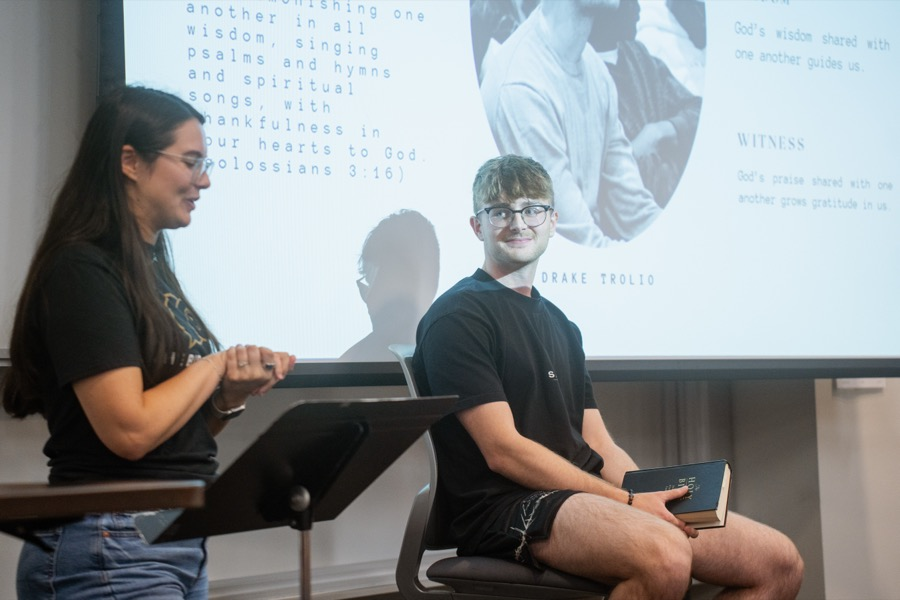
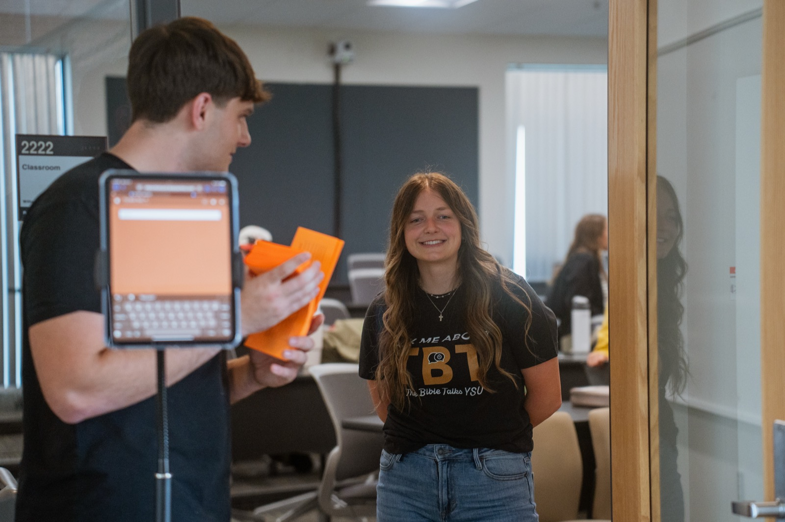

Events
Plugs
Plugs are our social events — time to relax, eat, and get to know each other outside of Bible Talk and Prayer. Bring a friend, whether or not they'd call themselves a Christian. This page updates as new ones are scheduled, so check back.

Jake and Sam Farewell Party — let's celebrate and send them off well! Avo-rrito food truck for dinner, snacks and desserts provided. Swim, play pickleball, frisbee, or just hang out at the beach. We'll pray for Jake and Sam at 7:30pm. Sevakeen Country Club, Salem, OH.
Register

Aug 23
Free · 11:30am–2pm
Campus Kickoff — welcome back to campus! Come find out what TBT is all about as we kick off the new school year.
No registration needed — just show up

Sep 4–6
From $150 · Registration open
Fall Bible Conference 2026 — "Family Matters — But Not the Way You Think." A weekend of talks, singing, and workshop groups in the book of Ruth at Camp Burton, Burton, OH. Come curious, come as you are.
Register

Dec 31–Jan 2
Price TBD · St. Louis, MO
CROSS CON27 — "This Day, That Day." A conference for 18–25 year olds with speakers including John Piper, Kevin DeYoung, David Platt, and more. Total cost (including hotel and transportation) still being finalized. Registration link to be sent after FBC26.
Link coming after FBC26
Plugs are announced on Instagram first. Follow us there →